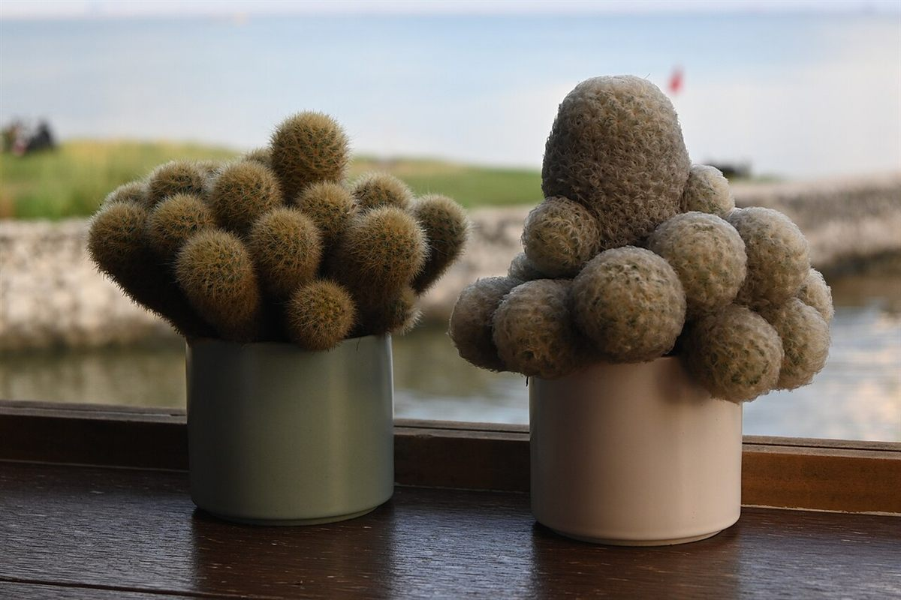

場面: ひと息つきたかった日
用事の合間に、少し時間があいた日でした。どこかで一息つきたくて、荒尾のカフェに立ち寄りました。急がなくていいと思えただけで、気持ちがすこし軽くなりました。
掲載写真はフリー素材のイメージです。店舗の実際の様子ではありません。他地域で撮影されたもの、撮影地が不明なものを含みます。

03このページの口コミは制作見本として作成したイメージ例です。実際のお客様の声ではありません。
用事の合間に、少し時間があいた日でした。どこかで一息つきたくて、荒尾のカフェに立ち寄りました。急がなくていいと思えただけで、気持ちがすこし軽くなりました。
Instagramの写真を眺めていて、行ってみたくなりました。写真を見て気になったお店に足を運ぶ時間は、それだけで小さな楽しみです。
行く前に、電話で気になることを聞いてみました。事前に確認できたので、安心して出かけられました。
営業時間やメニューは準備中です。お問い合わせは お電話 または Instagram から。